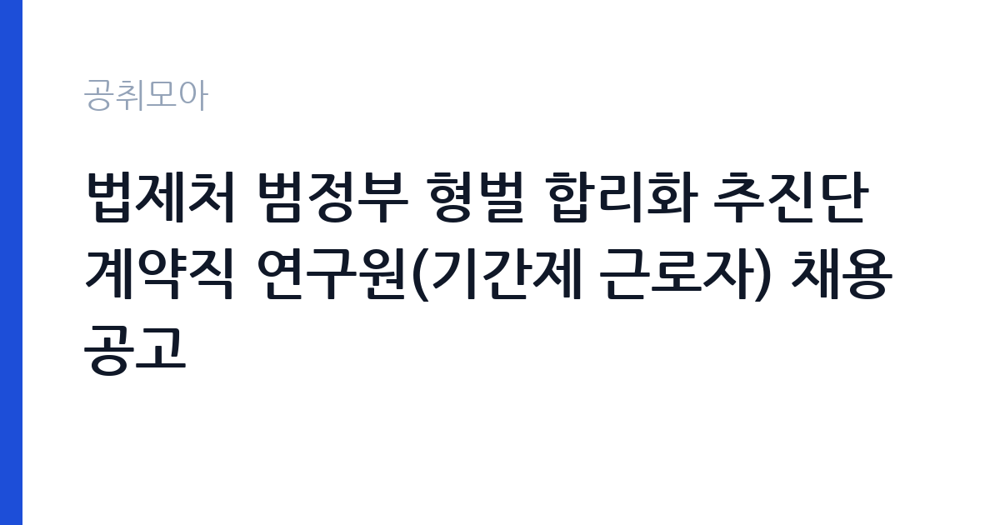

[국가기관] 법제처 범정부 형벌 합리화 추진단 계약직 연구원(기간제 근로자) 채용 공고
법제처 · 전국 · 마감 2026-11-10 (D-7) · 출처 나라일터

한눈에 보는 모집 조건
| 기관 | 법제처 |
|---|---|
| 공고명 | 법제처 범정부 형벌 합리화 추진단 계약직 연구원(기간제 근로자) 채용 공고 |
| 고용형태 | 기간제 |
| 근무지 | 전국 |
| 게시일 | 2026-11-03 |
| 마감일 | 2026-11-10 (D-7) |
지원자격, 이렇게 읽으세요
- 기간제 근로자 4명
- 접수 ~2026-11-10 마감
- 세부 조건은 원문 공고문 확인
기간제 근로자는 근로계약 기간이 정해진 신분입니다. 계약 기간과 갱신 가능 여부가 근로계약서에 명시되며 기간 만료 시 근로관계가 종료됩니다. 결원 보충이나 특정 사업 기간에 맞춰 채용되는 경우가 많아 업무 범위가 명확합니다. 이번 공고는 법제처에서 직접 진행하는 자체 전형으로, 응시자격과 제출서류는 공고문에 항목별로 제시됩니다. 자격요건은 변호사이거나 법학석사 학위 이상 소지자 등으로 공고에 제시되어 있습니다. 법학 전공 배경과 법령 해석 경력이 실무의 출발점이며, 입법·법제 업무 경험이 있으면 직무 연관성이 높습니다. 계약직 연구원으로 채용되어 계약 기간이 정해져 있고, 근무 시작일부터 과제에 투입됩니다. 제출서류에 연구 실적이나 경력 증빙이 포함되므로 관련 자료를 미리 준비하십시오. 세부 요건과 우대 사항은 원문 공고문에서 확인해야 합니다. 서류는 접수 마감 이후 보완이 되지 않으므로 자격 요건과 증빙 서류를 마감 전에 모두 갖춰야 합니다. 공고문에 명시된 우대 사항은 해당 여부를 확인해 증빙을 첨부해야 가점이 반영됩니다. 자격증은 유효 기간과 등록 상태를 확인해야 합니다. 갱신이 필요한 자격이라면 갱신 여부를 먼저 점검하십시오. 이 공고 원문에 적힌 응시 조건 문구는 '모집분야: 기간제 근로자(계약직 연구원) ㅇ 자격요건: 변호사, 법학석사학위 이상 소지자 등 ㅇ 접수기간: 2026.'입니다. 문구를 그대로 읽고 본인 해당 여부를 하나씩 표시해 두면 서류 단계에서 탈락하는 일을 줄일 수 있습니다.
이 공고의 포인트
이 공고의 첫 번째 포인트는 고용 형태입니다. 계약 기간이 정해져 있어 근무 종료 시점이 명확합니다. 그만큼 짧은 기간에 어떤 실적을 남길지가 중요해집니다. 두 번째는 업무 범위가 명확하다는 점입니다. 법제 연구(형벌 합리화 추진단) 직무로 채용되므로 배치 이후 담당 업무가 크게 흔들리지 않습니다. 세 번째는 근무지입니다. 전국 단위 채용이라 희망 근무지와 실제 배치 지역을 함께 확인해야 합니다. 공고가 올라온 지 얼마 되지 않아 아직 지원자 수가 많지 않을 가능성이 있습니다. 다만 선발 인원이 4명으로 많지 않아 자격을 갖춘 지원자가 몰리면 경쟁률이 높아질 수 있습니다.
전형은 어떻게 진행되나
채용 절차는 공고문에 안내된 순서대로 진행되며, 서류 접수 마감 후에는 추가 접수나 서류 보완이 이뤄지지 않는 것이 원칙입니다. 서류심사에서는 응시자격과 제출서류의 형식 요건을 기계적으로 확인하므로, 경력 증명서의 기간과 직무 내용이 공고의 요건과 정확히 맞아야 합니다. 면접은 지원자 수에 따라 집단면접과 개별면접으로 나뉘고, 직무 관련 질문과 상황 대응 질문이 함께 나옵니다. 합격자 발표는 개별 통보 또는 홈페이지 게시로 이뤄지며 이후 임용 절차가 진행됩니다. 동점자 처리 기준이 공고문에 명시되어 있으니 배점 항목을 미리 확인해 두십시오.
원문에서 확인한 전형 방식
법제처 범정부 형벌 합리화 추진단은 형벌 합리화 추진 업무를 위한 법적 전문성을 갖춘 계약직 연구원을 모집하니 역량있는 분들의 많은 지원 바랍니다. ㅇ 모집분야: 기간제 근로자(계약직 연구원) ㅇ 자격요건: 변호사, 법학석사학위 이상 소지자 등 ㅇ 접수기간: 2026. 11. 3. ~ 11. 10. ㅇ 응시방법: pearl2125@korea.kr 메일로 응시원서 접수 ㅇ 문의처: 044-200-6906 자세한 내용은 법제처 공지사항 및 첨부파일을 확인해 주시기 바랍니다.
이런 분께 추천해요
- 변호사 자격이나 법학석사 이상 학위를 갖춘 분
- 법령 검토·입법 실무 경험이 있는 분
- 정해진 계약 기간 동안 과제에 집중할 수 있는 분
지원 전 체크리스트
- 응시자격 요건과 경력 기준을 충족하는가 — 경력은 증명서로 입증해야 합니다
- 계약 기간과 근무 시작일·종료일을 확인했는가
- 제출서류 목록을 모두 준비했는가 — 누락 시 서류 단계에서 탈락합니다
- 접수 마감 2026-11-10 이전에 접수 방식을 확인해 제출했는가
모집 일정과 제출 타이밍
접수 마감은 2026-11-10이고 공고는 2026-11-03에 게시되었습니다. 준비 기간 7일 안에 서류 작성, 증빙 발급, 접수를 모두 마쳐야 하므로 주말을 포함해 일정을 미리 나누는 것이 좋습니다. 특히 경력 기술서나 직무수행계획서를 요구하는 공고는 작성에 시간이 걸리므로 첫날 초안을 잡으십시오. 서류 합격자 발표와 면접 사이 간격이 짧은 경우가 많아 면접 예상 질문은 서류 제출 전에 정리해 두는 편이 유리합니다. 마감 직전에는 접속이 몰리므로 여유를 두고 제출하십시오. 제출 서류는 공고문에 적힌 순서대로 정리하면 담당자가 확인하기 쉬워 누락이 줄어듭니다. 전국 단위 채용이라 지원 시 희망 근무지를 함께 고르는 경우가 많습니다. 배치 가능한 지사와 지역을 공고문에서 확인하십시오. 마감까지 일주일 안팎이 남아 서류 준비와 증빙 발급을 병행해야 합니다. 선발 인원이 소수라 면접에서 변별력이 크게 작용하는 전형입니다.
직무 이해하기: 국가기관
법제처 범정부 형벌 합리화 추진단의 계약직 연구원은 형벌 조항 정비 과제를 검토하는 연구 업무를 맡습니다. 현행 법령의 형벌 조항과 과태료·행정제재 조항을 조사해 정비 대상과 사유를 정리합니다. 관계 부처 의견을 취합해 개정안 문구를 검토하고, 국회 논의에 필요한 설명 자료를 작성합니다. 법령 정보 시스템에서 조문을 추출해 비교표를 만들고, 연구 결과를 보고서로 정리합니다. 과제 일정이 정해져 있어 부처 협의와 보고 일정을 함께 관리해야 합니다. 현장 업무와 사무 업무의 비중은 기관의 사업 일정에 따라 계절별로 달라집니다.
자기소개서 작성 팁
지원서는 법령 검토 경험을 과제 단위로 정리하는 것이 효과적입니다. 검토한 법령의 수와 분야, 작성한 개정안이나 의견서, 참여한 입법 절차를 구체적으로 쓰십시오. 변호사 자격이나 법학 학위는 요건과 직결되므로 취득 시점을 분명히 밝히십시오. 형벌 합리화라는 과제의 취지를 이해하고, 계약 기간 동안 수행할 수 있는 검토 과제를 제시하면 준비도가 드러납니다. 구성은 지원 동기, 직무 경험, 기여 방안 순서가 무난합니다. 지원 동기는 법제처의 사업 중 본인이 관심을 가진 부분을 한 가지로 좁혀 서술하고 추상적인 표현은 줄이십시오. 직무 경험은 담당했던 업무와 규모, 결과를 수치로 제시하면 설득력이 올라갑니다. 기여 방안은 입사 후 첫 3개월과 1년 계획으로 나눠 쓰면 준비도가 드러납니다.
면접 준비 포인트
면접에서는 법령 분석 능력과 문서 작성 역량을 확인합니다. 형벌 조항과 행정제재가 겹치는 경우 어떤 기준으로 정비 방향을 정할지, 부처 의견이 충돌할 때 어떻게 정리할지 묻습니다. 작성해 본 법령 검토 보고서나 개정안 문구 작업 경험을 구체적으로 답하십시오. 추진단 과제의 취지와 일정을 이해하고 있는지도 확인 대상입니다. 답변은 상황, 판단, 조치의 순서로 정리하면 전달이 분명해집니다. 모르는 질문에는 모른다고 밝히고 확인 방법을 제시하는 편이 억지 답변보다 낫습니다. 마지막에는 근무 의사와 함께 2026-11-10 이후 일정에 언제든 응할 수 있다는 점을 전달하십시오. 면접은 공고문에 적힌 직무 내용을 얼마나 이해하고 있는지 확인하는 질문으로 시작하는 경우가 많으니, 모집분야 문구를 그대로 읽어 두는 것이 도움이 됩니다.
급여·근무조건 읽는 법
법제처 계약직 연구원 보수는 기관의 계약직 임금 기준과 경력·학위에 따라 정해지며, 계약 기간이 함께 명시됩니다. 법학석사와 변호사 자격 보유자 사이에 처우 차이가 나는 경우가 있으므로 본인 요건에 해당하는 기준을 확인해야 합니다. 2026년 적용 최저임금은 시급 10,320원, 월 환산 2,156,880원이 최소 기준입니다. 구체적인 금액과 수당 항목은 공고문 처우 부분에서 확인하십시오. 2026년 적용 최저임금은 시급 10,320원, 월 환산 2,156,880원(주 40시간·209시간 기준)입니다. 고용노동부 고시 제2025-47호로 확정된 금액입니다. 공고문에 금액이 제시되지 않은 항목은 원문 보수표나 처우 설명에서 확인해야 하며 확인되지 않은 수치는 쓰지 않는 것이 원칙입니다. 비교할 때는 월 급여뿐 아니라 상여·명절휴가비·복지포인트·초과근무수당까지 포함한 연간 총액으로 계산하십시오. 기간제라면 계약 기간 동안의 총액을, 무기계약이라면 호봉 상승과 정년까지의 누적 소득을 기준으로 판단하는 편이 정확합니다.
자주 묻는 질문
- 선발 인원은 몇 명인가요?
공고문 기준 4명입니다. 직종별로 인원이 나뉘는 경우가 있으니 모집분야 항목을 함께 확인하십시오. - 근무지는 어디인가요?
전국 지역의 법제처 소속 근무지입니다. 세부 주소와 출퇴근 조건은 원문 공고문에서 확인할 수 있습니다. - 보수는 얼마인가요?
채용 신분(기간제)과 기관 임금 규정에 따라 정해지며 구체적인 금액은 공고문 처우 항목에 제시됩니다. 금액이 공개되지 않은 경우에는 원문의 보수표를 확인하십시오.
함께 보면 좋은 공고
[국가기관] 임기제공무원(일반임기제, 통번역 6급, 1명) 경력경쟁채용 공고 — 마감 2026-11-18[국가기관] 2026년도 제7회 국립목포대학교 기간제 채용 공고 (인권센터 상담) — 마감 2026-11-13[국가기관] 2026년 하반기 지역별사업체노동력조사 통계조사관 추가 채용공고 — 마감 2026-11-09출처: 나라일터 공개정보를 바탕으로 공취모아가 정리한 안내글입니다. 모집 조건·일정은 변경될 수 있으니 지원 전 반드시 원문 공고문을 확인하세요. 본 글은 정보 제공용이며 합격을 보장하지 않습니다.